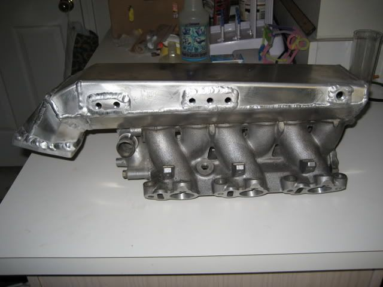
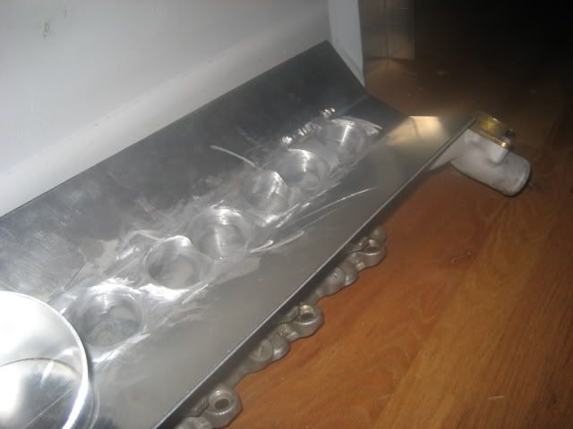
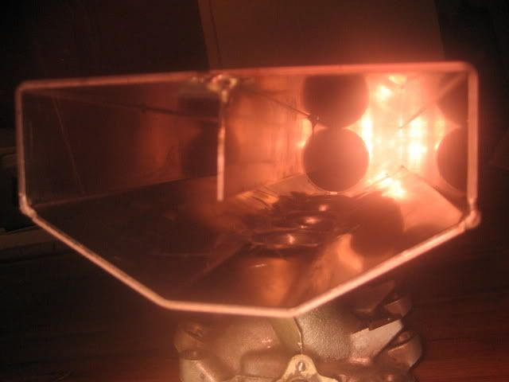
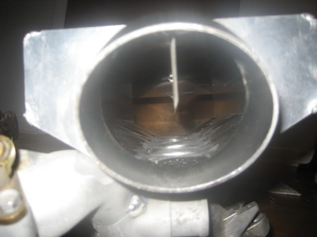
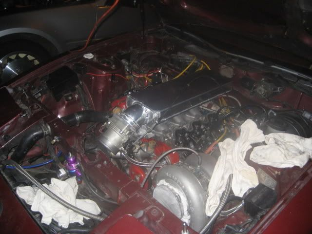
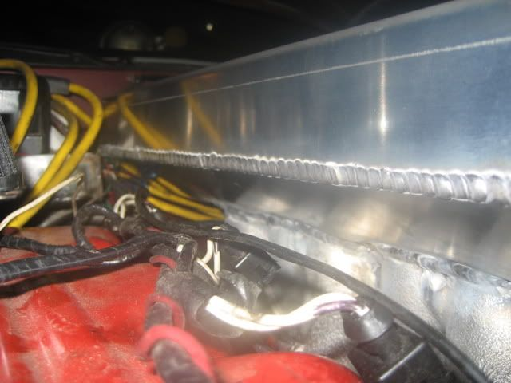

-
I really appreciate the business the z31 community has given me and I hope you enjoy the products you have received from me. However, I am currently putting DZP on hold because I HAVE to get my car going. To all those who have stuff paid for, I am in the process of working on them. For those who have been PM'ing me within the past month about parts, I will still do them, but please be patient.
It has been too long since my car has run, and it is very close to doing so right now. I just need the time to do it. Sorry for being so selfish BUT I WANT MY Z FUCKERS! :lol:
DZP will be on hold until further notice.85 Z31 6.0 LSX turbo 766whp/792wtq
04 GTO, LS6, big cam, porting, N20… underway for summertime daily driver. -
Re: Diabolic Z Products on hold…
sounds like a good idea.
after following your thread/build, i really want to see this thing in action. -
Re: Diabolic Z Products on hold…
I have a quick question and request. I was interested in this…

But want to know how it is 'assembled'? It can't be one piece I would think? Thanks!
If you have stock PM me. -
Re: Diabolic Z Products on hold…
That one is old. They no longer look like that. instead there is a pipe coming off of the front to join the throttle body flange to the plenum. My welding has gotten better since them too.gilzman wrote: I have a quick question and request. I was interested in this…
But want to know how it is 'assembled'? It can't be one piece I would think? Thanks!
If you have stock PM me.
But yes… It is all one piece. I need your lower intake THOROUGHLY clean before you send it to me. I take the sheet metal portion that I make and weld it to the lower intake. All that you need to install it is the regular 8 nuts/bolts that hold the lower intake on at that point. I don't have any in stock. I do have the brake metal pieces in stock ready to go, but since I need the customers lower intake to start, I can't keep stock. Also, I have to port and polish BEFORE I weld the plenum on, and not everyone wants porting and polishing.85 Z31 6.0 LSX turbo 766whp/792wtq
04 GTO, LS6, big cam, porting, N20… underway for summertime daily driver. -
Re: Diabolic Z Products on hold…
Can you post or send what the lower intake looks like BEFORE its welded up to the final product? As well as the latest product design?
If I can do the work on the lower intake myself, can we work soemthing out? -
Re: Diabolic Z Products on hold…
Well yeah, You don't have to pay me to do the work on the lower intake. I just charge $200 to port and polish it. If there is no porting or polishing, then it is just $600 to make it.gilzman wrote: Can you post or send what the lower intake looks like BEFORE its welded up to the final product? As well as the latest product design?
If I can do the work on the lower intake myself, can we work soemthing out?
Here is mine where I started the porting but I did not take any pictures of the final shaping and polishing of it. I would completely port and polish the lower intake, then I weld the lower portion to the lower intake, and then I match the port that I did prior with additional grinding and shaping then polishing. It is also welded on the underside too for strength.

Actually, you can kind of see it here after the top has been welded on. Still difficult to see though.


Finished product looks similar to this.

85 Z31 6.0 LSX turbo 766whp/792wtq
04 GTO, LS6, big cam, porting, N20… underway for summertime daily driver. -
Re: Diabolic Z Products on hold…
This is unusually well timed. I am in looking for something like this this for my retrofit.
I have access to pre-crush cars. These can be from a multitude of sources. Many pull-n-save and related businesses, police auctions, all sorts come in to me. Contrary to what people believe, cars are not 'cubed' anymore but flattened. We put them through massive machines that shred them. Its on TV like 'dirty jobs' etc.
But I run 'crews' of green-cards that can take all kinds of things including engines. MAFS,,,, trannys,,, etc. They are powertool driven and fill bins with stuff I want. Mostly recycle but I get parts 'free'.
In any case, I have 50-60 of these vg lower intakes at any time. Recycles. Its good aluminum.
My own ethanol car testing shows I need a very hot and free flowing intake manifold for a small turbo application. I am assuming that your intake, if welded, can take up the coolant temps and surround the intake charge and heat it. I show 35 mpg on my cam type.
I can send you 10 intakes at no charge if you would want to stock these after my testing. basically they will only go to recycle anyway.
Do you know the steady state intake manifold outer surface temp on a fully warmed up vg? It might be 150-180F? I can send a temp gauge if you don't know. From your design, it should be hot enough that you can't keep your hand on it?
PS I realize you have a committment to get your car running. Let me know -
Re: Diabolic Z Products on hold…
I do believe you just became the z31 communities best friend. lolgilzman wrote: I can send you 10 intakes at no charge if you would want to stock these after my testing. basically they will only go to recycle anyway.

1988 300zxt. gt35, stance, etc. Wheels: Varrstoen ES2 18x9.5 et-13 225/40. 18x10.5 et0 245/40
1990 jetta vr6'd -
Re: Diabolic Z Products on hold…
10 intakes is a bit much. I don't think I have sold that many intakes since I started making them LOL. Either way, if you want to send a few my way that would be great! Then I can work on them in my spare time.gilzman wrote: This is unusually well timed. I am in looking for something like this this for my retrofit.
I have access to pre-crush cars. These can be from a multitude of sources. Many pull-n-save and related businesses, police auctions, all sorts come in to me. Contrary to what people believe, cars are not 'cubed' anymore but flattened. We put them through massive machines that shred them. Its on TV like 'dirty jobs' etc.
But I run 'crews' of green-cards that can take all kinds of things including engines. MAFS,,,, trannys,,, etc. They are powertool driven and fill bins with stuff I want. Mostly recycle but I get parts 'free'.
In any case, I have 50-60 of these vg lower intakes at any time. Recycles. Its good aluminum.
My own ethanol car testing shows I need a very hot and free flowing intake manifold for a small turbo application. I am assuming that your intake, if welded, can take up the coolant temps and surround the intake charge and heat it. I show 35 mpg on my cam type.
I can send you 10 intakes at no charge if you would want to stock these after my testing. basically they will only go to recycle anyway.
Do you know the steady state intake manifold outer surface temp on a fully warmed up vg? It might be 150-180F? I can send a temp gauge if you don't know. From your design, it should be hot enough that you can't keep your hand on it?
PS I realize you have a committment to get your car running. Let me know
On a regular intake plenum for a z31 I would guess that the temp get to about 160-170 degrees on the top. I think mine being a thinner aluminum with more surface area, can disburse heat a little quicker. It still gets hot enough to where you cant keep your hand on it but, I would guess closer to 140-150 degrees. Either way it does feel slightly cooler than stock.
Its not that I don't love you guys giving me money to do stuff I love doing, but I just miss kicking the shit out of anything I come across on the streets. And before I know it winter is going to be here again, and it is going to be me kicking myself in the ass for not getting it done.85 Z31 6.0 LSX turbo 766whp/792wtq
04 GTO, LS6, big cam, porting, N20… underway for summertime daily driver. -
Re: Diabolic Z Products on hold…
go head and do what you need to do man. I understand, you just want Z running again, so go and get her running again!
it's not much fun trying to kick a ricers ass in a mini van lmao
he gives me shit all the time about the money i spend on my car but he simply doenst understand what type of "high" you get from watching a stock car transform into something alive with as much emotion and feelings as any human.Originally posted by PurePontiacKid -
Re: Diabolic Z Products on hold…
Actually the volume is too large for what I was thinking. I suppose this is actually for a large turbo application? You want the intake to have a reservoir of pressurized air big enough to fill any high end needs?
We use peel and stick type temp decals on all machinery at work. They are good enough to alert us to high temps on machinery. I have some in my garage beer fridge and I keep the brews down to 31 deg. It would be interesting to see what temps you would record when the car was running. I would agree that there would be a hot bottom and somewhat cooler top to that intake.
You can get free samples from the company that makes those stickers. -
Re: Diabolic Z Products on hold…
Yes the intake plenum that I run is a 6 liter plenum for high revs and lots of air. I also make them 3 liters in size for either N/A apps or smaller turbo apps. You don't really want to go smaller than 3 liters on a 3 liter engine though.gilzman wrote: Actually the volume is too large for what I was thinking. I suppose this is actually for a large turbo application? You want the intake to have a reservoir of pressurized air big enough to fill any high end needs?
We use peel and stick type temp decals on all machinery at work. They are good enough to alert us to high temps on machinery. I have some in my garage beer fridge and I keep the brews down to 31 deg. It would be interesting to see what temps you would record when the car was running. I would agree that there would be a hot bottom and somewhat cooler top to that intake.
You can get free samples from the company that makes those stickers.85 Z31 6.0 LSX turbo 766whp/792wtq
04 GTO, LS6, big cam, porting, N20… underway for summertime daily driver. -
Re: Diabolic Z Products on hold…
Do what you have to do! Get your car running; it's already August so there isn't much time left in the driving season (here anyways) Get out there and enjoy!


-
Re: Diabolic Z Products on hold…
Ok, there is literally nothing more that I can do to my car right now until it is wired up and running. Thomas is taking is time on it, only working on it when he has time. SO… its a slow going process. He promises it will be ready to run by the 20th of September at out sport compact event so, I guess we'll see…
Until then… I will be taking your orders for manifolds or what have you again, starting now!85 Z31 6.0 LSX turbo 766whp/792wtq
04 GTO, LS6, big cam, porting, N20… underway for summertime daily driver.

Copyright © 2006–. All rights reserved. Privacy Policy